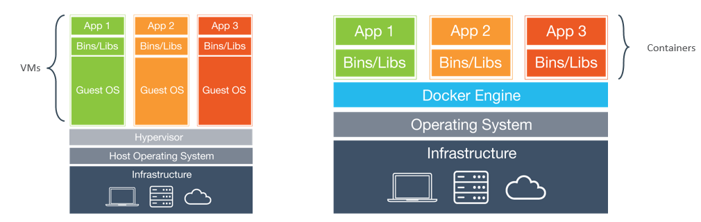
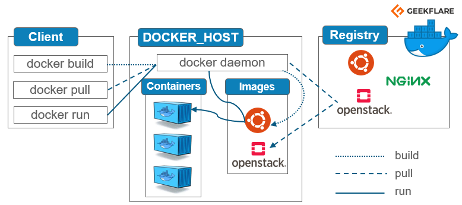
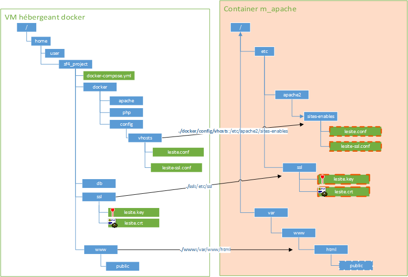

11 — Docker : déployer et exploiter des applications conteneurisées¶
Introduction¶
Dans le contexte SportLudique, les services web sont déployés sur un serveur Debian 13. Le frontal HTTPS existant termine TLS et transmet les requêtes HTTP aux services internes. Les conteneurs applicatifs ne gèrent donc ni les certificats ni HTTPS.
| Niveau | Objectif | Durée indicative |
|---|---|---|
| 🟢 Socle | Consommer des images du registry | 4 h |
| 🟠 Avancé | Intégrer des conteneurs, réseaux et volumes | +4 h |
| 🔴 Expert | Construire des images et sécuriser une stack | +4 h ou davantage |
🟢 Socle — Consommer des images¶
1. Virtualisation et conteneurisation¶
Une machine virtuelle possède son propre noyau. Un conteneur Linux partage le noyau de son hôte, tout en disposant d'espaces de noms isolant notamment ses processus, son réseau et ses montages. Les cgroups permettent de contrôler ses ressources.

| Machine virtuelle | Conteneur |
|---|---|
| Noyau propre | Noyau partagé |
| Système invité complet | Application et dépendances |
| Hyperviseur | Moteur de conteneurs |
2. Architecture Docker¶

- Image : modèle constitué de couches en lecture seule.
- Conteneur : instance d'une image, avec une couche d'écriture propre.
- Registry : dépôt d'images, par exemple Docker Hub.
- Daemon : service
dockerdqui gère les objets Docker. - Client : commande
dockerqui communique avec le daemon via son API.
graph LR
C["Client Docker"] -->|Socket Unix| D["Daemon Docker"]
D -->|Pull| R["Registry"]
D --> I["Images locales"]
I --> A["Conteneur A"]
I --> B["Conteneur B"]3. Installation sur Debian 13¶
Sur une VM Debian 13 dédiée, suivre la documentation officielle : installation de Docker Engine sur Debian, section Install using the apt repository. Installer également les plugins Buildx et Compose indiqués dans cette procédure.
Vérifier l'installation :
sudo systemctl status docker
sudo docker version
sudo docker compose version
sudo docker run --rm hello-world
4. Images et cycle de vie¶
Rechercher une image officielle sur Docker Hub, consulter ses tags et sa documentation. Dans nginx:stable-alpine, nginx est le dépôt et stable-alpine le tag. Un tag peut évoluer ; un digest identifie précisément un contenu. docker pull télécharge une image, docker run crée un conteneur (et télécharge l'image si nécessaire).
sudo docker pull nginx:stable-alpine
sudo docker image ls
sudo docker run -d --name web nginx:stable-alpine
sudo docker ps
sudo docker logs web
sudo docker exec -it web sh
Dans le conteneur :
graph LR
I["Image"] -->|docker run| C["Conteneur actif"]
C -->|docker stop| S["Conteneur arrêté"]
S -->|docker start| C
S -->|docker rm| X["Conteneur supprimé"]sudo docker stop web
sudo docker ps -a
sudo docker start web
sudo docker stop web
sudo docker rm web
Note
docker run crée un nouveau conteneur. docker start redémarre un conteneur existant. Arrêter un conteneur ne supprime pas sa couche d'écriture.
5. Publication des ports¶
sudo docker run -d --name web1 -p 8080:80 nginx:stable-alpine
sudo docker run -d --name web2 -p 8081:80 nginx:stable-alpine
curl http://localhost:8080
curl http://localhost:8081
sudo docker ps
graph LR
C["Client HTTP"] --> H1["Hôte TCP 8080"]
C --> H2["Hôte TCP 8081"]
subgraph D["Docker"]
H1 --> A["web1 TCP 80"]
H2 --> B["web2 TCP 80"]
end-p 8080:80 signifie port hôte:port conteneur. Deux conteneurs peuvent écouter sur le même port interne, mais ne peuvent pas publier simultanément le même port sur la même adresse hôte.
Warning
Sans adresse explicite, Docker publie généralement sur toutes les interfaces de l'hôte. -p 127.0.0.1:8080:80 limite l'accès à l'hôte local. EXPOSE dans un Dockerfile ne publie aucun port.
Manipulation : tester depuis un autre poste avec l'adresse IP du serveur. Expliquer pourquoi localhost ne désigne pas le serveur depuis ce poste.
6. Un conteneur est remplaçable¶
sudo docker exec web1 sh -c 'echo test > /tmp/temoin'
sudo docker stop web1
sudo docker start web1
sudo docker exec web1 cat /tmp/temoin
sudo docker rm -f web1
sudo docker run -d --name web1 -p 8080:80 nginx:stable-alpine
sudo docker exec web1 cat /tmp/temoin
Le dernier test échoue : le fichier appartenait au conteneur supprimé.
Les solutions de persistance seront étudiées au niveau Avancé.
7. Docker Compose : déploiement déclaratif¶
Créer compose.yaml :
compose.yaml ou docker-compose.yml ?
Historiquement, le fichier de configuration de Docker Compose était nommé docker-compose.yml.
Aujourd'hui, Docker recommande l'utilisation du nom compose.yaml. Les anciens noms restent néanmoins compatibles.
De même, la commande docker-compose a été remplacée par docker compose, désormais intégrée à la CLI Docker.
Vous rencontrerez encore fréquemment ces anciennes conventions dans les documentations et les dépôts GitHub.
Dans ce support, nous utiliserons la syntaxe actuelle : compose.yaml et docker compose.
sudo docker compose config
sudo docker compose up -d
sudo docker compose ps
sudo docker compose logs web
sudo docker compose down
sudo docker compose up -d
Compose décrit les services dans un fichier YAML. up -d crée et démarre les services ; down supprime les conteneurs et le réseau du projet. Les réseaux et volumes seront approfondis au niveau Avancé.
Le mode détaché (-d)
L'option -d (pour detached mode) permet de démarrer les conteneurs en arrière-plan et de récupérer immédiatement la main sur le terminal.
Sans cette option, les journaux d'exécution (logs) s'affichent directement dans le terminal.
Pour consulter les journaux d'un service démarré en arrière-plan, utilisez sudo docker compose logs.
L'option -f (follow) permet de suivre ces journaux en temps réel : sudo docker compose logs -f.
Le mode détaché est généralement privilégié pour les services destinés à fonctionner en permanence.
Validation Socle¶
Déployer deux serveurs web issus du registry, sur les ports 8080 et 8081, avec un seul fichier Compose. Identifier leurs images, vérifier les réponses HTTP et consulter les journaux. Fournir le fichier Compose et les résultats des tests. Aucun Dockerfile ni volume demandé.
Que signifie 8080:80 ?
Quelle opération supprime la couche d'écriture d'un conteneur ?
🟠 Avancé — Intégrer des conteneurs¶
8. Accès au daemon sans sudo¶
Se déconnecter puis se reconnecter. Vérifier avec id et docker ps.
Groupe docker
L'accès au socket du daemon rootful confère des privilèges équivalents à root. Cette manipulation est réservée aux comptes administrateurs autorisés sur les VM de TP.
Les commandes suivantes sont exécutées sans sudo après cette configuration.
9. Persistance des données¶
Arrêter le projet Socle avant de réutiliser ses ports :
9.1 Bind mount¶
sudo mkdir -p /srv/sportludique/www
sudo sh -c 'echo "Bienvenue chez SportLudique" > /srv/sportludique/www/index.html'
docker run -d --name web -p 8080:80 \
-v /srv/sportludique/www:/usr/share/nginx/html:ro nginx:stable-alpine
curl http://localhost:8080
Modifier le fichier sur l'hôte, puis actualiser la page. Supprimer et recréer le conteneur avec le même montage : le contenu reste disponible.
9.2 Volume nommé¶
docker volume create donnees
docker run --rm -v donnees:/data alpine:3 sh -c 'echo persistant > /data/test.txt'
docker run --rm -v donnees:/data alpine:3 cat /data/test.txt
docker volume inspect donnees
graph TB
subgraph H["Hôte Docker"]
B["/srv/sportludique/www"]
V["Volume nommé donnees"]
subgraph C["Conteneur"]
W["Couche écriture temporaire"]
M["/usr/share/nginx/html"]
N["/data"]
end
B ---|Bind mount| M
V ---|Volume| N
end| Type | Usage |
|---|---|
| Bind mount | Configuration, contenu web accessible depuis l'hôte |
| Volume nommé | Données applicatives gérées par Docker |
| Couche d'écriture | Fichiers temporaires du conteneur |
Warning
Un volume n'est pas une sauvegarde. Sa suppression entraîne la perte de ses données. Le suffixe :ro interdit l'écriture via le montage concerné.
Nettoyer le conteneur de test avant de poursuivre (les fichiers et le volume restent disponibles) :
10. Réseaux Docker et DNS interne¶
docker network ls
docker network create sport-net
docker run -d --name serveur --network sport-net nginx:stable-alpine
docker network inspect sport-net
docker run --rm --network sport-net alpine:3 wget -qO- http://serveur
graph LR
subgraph H["Hôte Docker"]
G["Bridge et passerelle"]
A["Client Alpine"] --- G
B["Serveur Nginx TCP 80"] --- G
A -->|HTTP vers serveur| B
A -.->|Résolution de serveur| D["DNS interne Docker"]
endSur un bridge créé par l'utilisateur, Docker fournit une résolution DNS par nom. Le bridge par défaut bridge ne fournit pas cette résolution automatique par nom de conteneur.
docker run --rm --network sport-net alpine:3 nslookup serveur
docker run --rm alpine:3 wget -T 3 -qO- http://serveur
Le second test doit échouer : le client ne partage pas le réseau sport-net. Aucun port du serveur n'a été publié sur l'hôte.
11. Stack WordPress et MariaDB¶
Créer .env avec deux mots de passe distincts, robustes et propres au groupe :
Créer compose.yaml :
services:
wordpress:
image: wordpress:6-php8.3-apache
ports:
- "8080:80"
environment:
WORDPRESS_DB_HOST: db:3306
WORDPRESS_DB_NAME: sportludique
WORDPRESS_DB_USER: sport
WORDPRESS_DB_PASSWORD: ${DB_PASSWORD:?Mot de passe requis}
volumes:
- wordpress_data:/var/www/html
depends_on:
db:
condition: service_healthy
restart: unless-stopped
db:
image: mariadb:11.4
environment:
MARIADB_DATABASE: sportludique
MARIADB_USER: sport
MARIADB_PASSWORD: ${DB_PASSWORD:?Mot de passe requis}
MARIADB_ROOT_PASSWORD: ${DB_ROOT_PASSWORD:?Mot de passe requis}
volumes:
- db_data:/var/lib/mysql
healthcheck:
test: ["CMD", "healthcheck.sh", "--connect", "--innodb_initialized"]
interval: 10s
timeout: 5s
retries: 10
restart: unless-stopped
volumes:
wordpress_data:
db_data:
docker compose up -d
docker compose ps
docker compose logs db
docker compose exec wordpress getent hosts db
docker compose exec wordpress php -r '$s=fsockopen("db",3306); echo "Connexion TCP OK\n"; fclose($s);'
docker compose down conserve les volumes nommés ; docker compose down -v supprime aussi les volumes du projet hors volumes externes.
Le service db est joignable par son nom DNS sur le réseau du projet. Il ne possède aucune section ports. depends_on associé au healthcheck attend que la base soit déclarée saine avant de démarrer WordPress.
Warning
Ne pas versionner .env. Les variables d'environnement restent accessibles aux administrateurs Docker. Un fichier .env n'est pas un coffre-fort de secrets.
12. Intégration au frontal HTTPS existant¶
graph LR
C["Client"] -->|HTTPS 443| F["Frontal TLS"]
F -->|HTTP| R["Reverse proxy"]
R -->|HTTP 8080| H["Hôte Docker"]
subgraph D["Projet Compose"]
H -->|HTTP 80| W["WordPress"]
W -->|SQL 3306 - db| B["MariaDB"]
W --- V["Volume WordPress"]
B --- S["Volume SQL"]
endConfigurer le frontal existant pour transmettre les requêtes au port 8080 du serveur Docker. Conserver le nom d'hôte et transmettre le protocole original (X-Forwarded-Proto: https). Si le frontal et le reverse proxy sont distincts, préserver cette information entre les deux équipements et ne faire confiance qu'aux en-têtes du frontal autorisé.
Exemple de bloc Nginx sur le frontal qui termine TLS, dans un serveur HTTPS déjà configuré, si ce frontal assure également le rôle de reverse proxy. Si les deux équipements sont distincts, le frontal transmet au reverse proxy, qui transmet ensuite au serveur Docker :
location / {
proxy_pass http://IP_SERVEUR_DOCKER:8080;
proxy_set_header Host $host;
proxy_set_header X-Forwarded-Proto $scheme;
proxy_set_header X-Forwarded-For $proxy_add_x_forwarded_for;
}
Remplacer l'adresse par celle du serveur. Vérifier que WordPress reconnaît HTTPS derrière le proxy et que son URL publique utilise HTTPS. Restreindre l'accès au port 8080 au frontal autorisé, via le filtrage réseau adapté à Docker ; ne pas supposer qu'une simple règle UFW suffit.
Tests : accéder au site par son FQDN HTTPS, vérifier le certificat côté frontal, créer un article, recréer la stack avec down puis up -d, vérifier que l'article est conservé.
13. Administration avec Portainer¶
Portainer utilise l'API Docker pour administrer les images, conteneurs, réseaux, volumes et stacks.
docker volume create portainer_data
docker run -d --name portainer --restart=unless-stopped \
-p 9443:9443 \
-v /var/run/docker.sock:/var/run/docker.sock \
-v portainer_data:/data portainer/portainer-ce:lts
Accéder à https://IP_SERVEUR_DOCKER:9443 depuis le réseau d'administration et créer immédiatement le compte administrateur. Le HTTPS de cette interface d'administration est distinct du HTTPS des applications, géré par le frontal.
Danger
Portainer dispose d'un accès privilégié au daemon via son socket. Ne jamais publier cette interface sur Internet. Restreindre son accès au réseau d'administration.
| Action Portainer | Équivalent CLI |
|---|---|
| Containers | docker ps -a |
| Images | docker image ls |
| Networks | docker network ls |
| Volumes | docker volume ls |
| Logs | docker logs NOM |
| Stacks | docker compose |
Manipulation : retrouver les objets WordPress, consulter les logs et déployer une stack de test distincte depuis Portainer avec un port libre. Ne pas redéployer le projet WordPress existant sous un autre nom.
Validation Avancé¶
Fournir le schéma logique, le fichier Compose sans secrets, les tests DNS et TCP internes, la preuve de persistance et l'accès HTTPS via le frontal. Expliquer pourquoi MariaDB n'a pas besoin d'un port publié.
Comment WordPress joint-il MariaDB dans le projet Compose ?
Le groupe docker permet-il une utilisation réellement non privilégiée ?
🔴 Expert — Construire et sécuriser des images¶
14. Construire une image personnalisée¶
Modernisation de l'ancienne stack LAMP du support. L'illustration historique présente le principe de séparation des fichiers ; l'arborescence suivante est celle à utiliser pour ce TP.

expert/
├── compose.yaml
├── .env
├── .gitignore
├── docker/
│ ├── nginx/default.conf
│ └── php/
│ ├── Dockerfile
│ └── .dockerignore
└── www/index.php
Créer les répertoires :
docker/php/Dockerfile :
docker/php/.dockerignore :
| Instruction | Rôle |
|---|---|
| FROM | Image de base |
| RUN | Commande exécutée pendant la construction |
| COPY | Copie de fichiers du contexte vers l'image |
| WORKDIR | Répertoire de travail |
| USER | Utilisateur d'exécution |
| CMD | Commande ou arguments par défaut |
| ENTRYPOINT | Point d'entrée du conteneur |
| EXPOSE | Documentation du port interne |
docker build -t sportludique/php:1.0 docker/php
docker image history sportludique/php:1.0
docker run --rm sportludique/php:1.0 php -m
Relancer la construction et observer le cache. L'image hérite du point d'entrée et de la commande PHP-FPM de l'image officielle.
Publier une image dans un registry (option Expert)¶
Avec un compte Docker Hub et un dépôt autorisé, remplacer MON_COMPTE par son identifiant :
docker login
docker tag sportludique/php:1.0 MON_COMPTE/sportludique-php:1.0
docker push MON_COMPTE/sportludique-php:1.0
docker pull MON_COMPTE/sportludique-php:1.0
docker logout
Ne jamais intégrer de secret dans une image. Utiliser un dépôt privé si le contenu ne doit pas être public.
15. Cloisonner une architecture Nginx / PHP-FPM / MariaDB¶
graph LR
F["Frontal HTTPS existant"] -->|HTTP 8082| N
subgraph FRONT["Réseau frontend"]
N["Nginx TCP 80"] -->|FastCGI 9000| P["PHP-FPM"]
end
subgraph BACK["Réseau backend interne"]
P -->|SQL 3306| B["MariaDB"]
end
B --- V["Volume SQL"]docker/nginx/default.conf :
server {
listen 80;
root /var/www/html;
index index.php;
location / {
try_files $uri $uri/ =404;
}
location ~ \.php$ {
try_files $uri =404;
include fastcgi_params;
fastcgi_param SCRIPT_FILENAME $document_root$fastcgi_script_name;
fastcgi_pass php:9000;
}
}
www/index.php :
<?php
try {
$pdo = new PDO('mysql:host=db;dbname=sportludique;charset=utf8mb4',
'sport', getenv('DB_PASSWORD'));
echo 'SportLudique : connexion SQL OK';
} catch (PDOException $e) {
http_response_code(503);
echo 'Base indisponible';
}
Créer .env comme au niveau Avancé, avec de nouveaux secrets, et .gitignore contenant .env.
compose.yaml :
services:
web:
image: nginx:stable-alpine
ports:
- "8082:80"
volumes:
- ./www:/var/www/html:ro
- ./docker/nginx/default.conf:/etc/nginx/conf.d/default.conf:ro
networks: [frontend]
depends_on: [php]
restart: unless-stopped
php:
build: ./docker/php
image: sportludique/php:1.0
environment:
DB_PASSWORD: ${DB_PASSWORD:?Mot de passe requis}
volumes:
- ./www:/var/www/html:ro
networks: [frontend, backend]
depends_on:
db:
condition: service_healthy
restart: unless-stopped
db:
image: mariadb:11.4
environment:
MARIADB_DATABASE: sportludique
MARIADB_USER: sport
MARIADB_PASSWORD: ${DB_PASSWORD:?Mot de passe requis}
MARIADB_ROOT_PASSWORD: ${DB_ROOT_PASSWORD:?Mot de passe requis}
volumes:
- db_data:/var/lib/mysql
networks: [backend]
healthcheck:
test: ["CMD", "healthcheck.sh", "--connect", "--innodb_initialized"]
interval: 10s
timeout: 5s
retries: 10
restart: unless-stopped
networks:
frontend:
backend:
internal: true
volumes:
db_data:
docker compose up -d --build
curl http://localhost:8082
docker compose exec php getent hosts db
docker compose exec web nslookup db
docker network ls
Le test DNS depuis Nginx doit échouer. PHP appartient aux deux réseaux ; Nginx et MariaDB ne partagent aucun réseau. Le réseau backend interne ne fournit pas d'accès externe direct à la base.
16. Réduire les privilèges et les ressources¶
graph TB
A["Processus root dans un conteneur"] --> B["Privilèges limités par isolation et capabilities"]
C["Processus non-root"] --> D["Privilèges applicatifs réduits"]
E["Daemon rootless"] --> F["Privilèges hôte réduits via user namespace"]Tester un conteneur non-root indépendant :
docker run --rm --user 1000:1000 --read-only \
--cap-drop ALL --security-opt no-new-privileges:true \
--memory 128m --cpus 0.5 alpine:3 id
Le second test doit échouer. Dans Compose, on peut appliquer à un service compatible :
user: "1000:1000"
read_only: true
cap_drop: [ALL]
security_opt:
- no-new-privileges:true
mem_limit: 128m
cpus: 0.5
Warning
Ne pas appliquer aveuglément ces options à MariaDB, Nginx ou PHP-FPM : vérifier les UID/GID, répertoires inscriptibles, ports et capabilities nécessaires. Tester une mesure à la fois. Un processus non-root ne signifie pas que le daemon est rootless.
17. Docker rootless¶
Utiliser une VM dédiée et un compte ordinaire distinct, sans appartenance au groupe docker. Ne pas effectuer la migration sur un serveur partagé ou en production.
graph TB
subgraph R["Docker rootful"]
A["Client sudo ou groupe docker"] --> B["Socket système"]
B --> C["Daemon root"]
C --> D["Conteneurs"]
end
subgraph U["Docker rootless"]
E["Client utilisateur"] --> F["Socket utilisateur"]
F --> G["Daemon utilisateur"]
G --> H["Conteneurs dans user namespace"]
endDepuis le compte administrateur :
sudo apt install -y uidmap dbus-user-session docker-ce-rootless-extras
sudo systemctl disable --now docker.service docker.socket
Vérifier que le compte rootless dispose d'au moins 65536 UID et GID subordonnés dans /etc/subuid et /etc/subgid. Debian les attribue généralement à la création d'un compte ordinaire ; sinon demander à l'administrateur d'attribuer des plages libres, sans chevauchement.
Ouvrir une véritable session SSH avec le compte rootless (pas su depuis root) :
grep "^$(id -un):" /etc/subuid /etc/subgid
dockerd-rootless-setuptool.sh install
systemctl --user enable --now docker
docker context ls
docker context use rootless
docker info
Depuis un compte administrateur, autoriser le démarrage hors session si nécessaire : sudo loginctl enable-linger NOM_UTILISATEUR.
Depuis le compte rootless :
docker run -d --name web -p 8080:80 nginx:stable-alpine
curl http://localhost:8080
ps -eo user,pid,args | grep '[d]ockerd'
docker info --format '{{json .SecurityOptions}}'
Vérifier la présence de rootless dans les options de sécurité et le propriétaire du daemon. Les images, volumes et conteneurs rootful ne sont pas automatiquement transférés vers le daemon rootless.
Note
Le socket rootless se trouve généralement dans $XDG_RUNTIME_DIR/docker.sock. Les ports inférieurs à 1024 nécessitent une configuration supplémentaire ; le frontal HTTPS évite ici ce besoin. Les limites de ressources nécessitent notamment cgroup v2 et une délégation systemd adaptée.
Reproduire la stack Expert depuis un répertoire appartenant au compte rootless. Vérifier les droits des bind mounts. Portainer rootful n'administre pas automatiquement ce nouveau daemon.
Documentation : Docker rootless.
18. Exploitation : sauvegarde, restauration et mise à jour¶
Depuis le répertoire du projet Expert actif, créer une donnée témoin dans MariaDB :
docker compose exec db sh -c 'mariadb -u root -p"$MARIADB_ROOT_PASSWORD" sportludique -e "CREATE TABLE IF NOT EXISTS temoin (id INT PRIMARY KEY); INSERT IGNORE INTO temoin VALUES (1);"'
Sauvegarder logiquement la base :
mkdir -p sauvegardes
chmod 700 sauvegardes
umask 077
docker compose exec -T db sh -c 'mariadb-dump -u root -p"$MARIADB_ROOT_PASSWORD" --single-transaction sportludique' > sauvegardes/sportludique.sql
test -s sauvegardes/sportludique.sql
Restaurer dans une base de test distincte sur la VM de TP :
docker compose exec db sh -c 'mariadb -u root -p"$MARIADB_ROOT_PASSWORD" -e "CREATE DATABASE restauration_test;"'
docker compose exec -T db sh -c 'mariadb -u root -p"$MARIADB_ROOT_PASSWORD" restauration_test' < sauvegardes/sportludique.sql
docker compose exec db sh -c 'mariadb -u root -p"$MARIADB_ROOT_PASSWORD" restauration_test -e "SELECT * FROM temoin;"'
Sauvegarder également compose.yaml, les Dockerfiles, les configurations, les fichiers web et les secrets dans un emplacement protégé hors de la VM. Pour WordPress, prévoir en plus une sauvegarde cohérente de son volume applicatif.
docker compose pull web db
docker compose build --pull php
docker compose up -d
docker compose ps
docker compose logs --tail=50
curl http://localhost:8082
Les tags utilisés dans le TP sont évolutifs. En production, valider les versions et les digests, analyser les vulnérabilités, sauvegarder avant mise à jour et prévoir un retour arrière compatible avec les données.
Validation Expert¶
Présenter une stack fonctionnelle avec image PHP personnalisée, deux réseaux, base non publiée, frontal HTTPS externe et persistance. Démontrer l'isolation réseau, la restauration SQL et le fonctionnement rootless. Justifier les mesures de sécurité retenues et leurs limites.
Quelle différence caractérise Docker rootless ?
Un volume nommé constitue-t-il une sauvegarde ?
Aide-mémoire¶
| Commande | Fonction |
|---|---|
docker image ls |
Images locales |
docker ps -a |
Tous les conteneurs |
docker inspect NOM |
Configuration détaillée |
docker logs NOM |
Journaux |
docker exec -it NOM sh |
Shell si disponible |
docker stats |
Consommation des ressources |
docker network inspect NOM |
Réseau et membres |
docker volume inspect NOM |
Informations sur un volume |
docker compose config |
Validation du modèle (peut afficher les secrets) |
docker compose up -d |
Déploiement |
docker compose down |
Arrêt et suppression des conteneurs du projet |
docker compose logs -f |
Suivi des journaux |
Pour aller plus loin¶
Docker Swarm et Kubernetes permettent d'orchestrer des applications sur plusieurs nœuds. Ils ne sont pas nécessaires pour les objectifs de ce module.